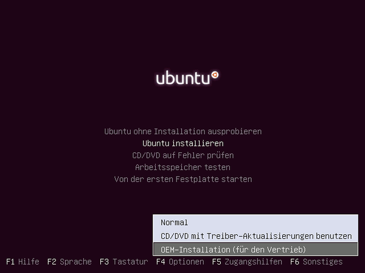
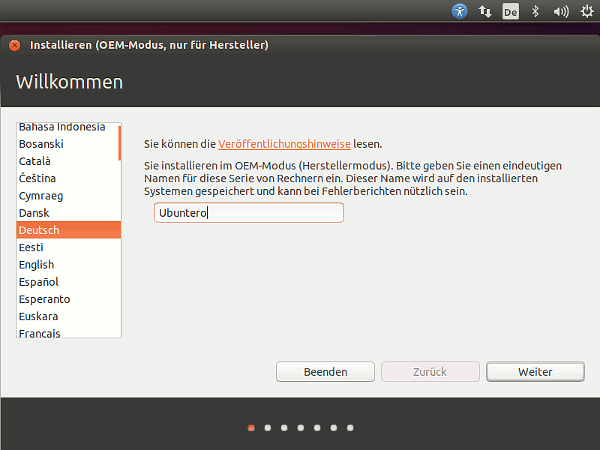
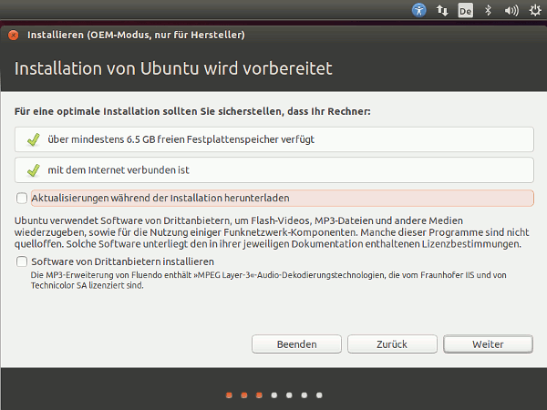
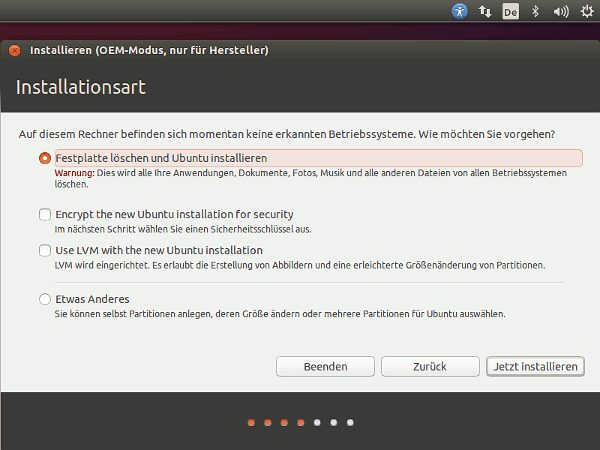
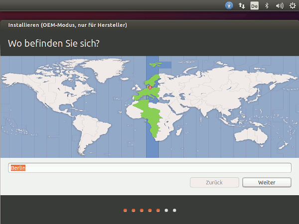
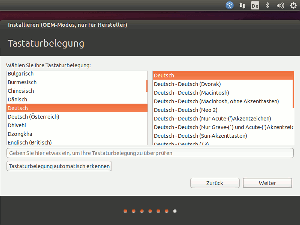
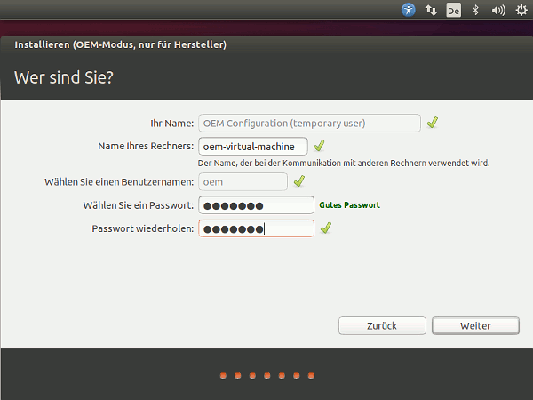
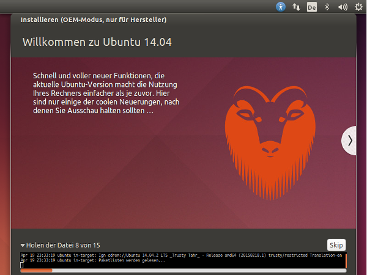
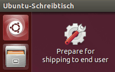

OEM Installation
Dieser Artikel wurde für die folgenden Ubuntu-Versionen getestet:
Ubuntu 14.04 Trusty Tahr
Mit der Installations-Option "OEM-Installation" können Hardware-Hersteller Computer mit vorinstalliertem Ubuntu ausliefern. Die OEM-Installation lohnt sich auch, wenn man kein Wiederverkäufer ist, aber Ubuntu auf baugleichen Maschinen für Anwender installieren und nur vorkonfigurieren will.
Installation¶
Im Bootmenü der Ubuntu-CD wählt man den Punkt "Ubuntu installieren" und danach die Funktionstaste F4 um die Auswahl "OEM-Installation (für Vertrieb)" zu bekommen.
Hinweis:
Ab Lucid Lynx 10.04.1 muss man beim Booten eine Taste drücken nachdem auf dem sonst leeren Bildschirm unten ein kleines Tastatursymbol erscheint. Erst dann bekommt man das Menü zur Auswahl der OEM-Installation.
Hinweis:
Sollte auf dem Bootmedium (z.B. Multiboot-USB-Stick) kein solches Auswahlmenü vorhanden sein, so kann der OEM-Installationsmodus alternativ mit Hilfe der Bootoption oem-config/enable=true eingeschaltet werden.

Installieren des neuen Systems¶
Die Installationsschritte sind nun identisch zu einer normalen Installation.
Es werden folgende Punkte abgefragt:
Rechnernamen
Zeitzone
Tastaturbelegung
Festplatten Partitionierung
Der Unterschied ist, dass man keinen Benutzernamen vergeben kann, dafür aber ein Passwort, welches zweimal bestätigt werden muss.

Optional können Aktualisierungen und/oder Software von Drittanbietern ausgewählt werden

Bei neuen Computer - welche ausschließlich mit Ubuntu ausgeliefert werden soll - kann man gesamte Festplatte auswählen

Hier bitte die richtige Zeitzone auswählen

Hier Tastaturbelegung auswählen

Das Kennwort bitte gut merken, da es für die Administration als Benutzer "OEM" benötigt wird!

Die Installation läuft ...

Neustart des Systems¶
Sobald die Installation abgeschlossen ist, sollte man den Computer neu starten. Das System fährt nun wieder hoch und man wird automatisch als Benutzer oem für die abschließende Konfiguration angemeldet.
Konfiguration zur Auslieferung¶
Jetzt kann man ggf. Anwendungen hinzufügen, Automatische Updates installieren, Treiber einrichten und das System an die Bedürfnisse des Endnutzers anpassen.
Achtung!
Dateien im Homeverzeichnis und persönliche Programmeinstellungen werden nicht übernommen und mit dem Benutzer oem entfernt!
Stattdessen kopiert man die gewünschten Dateien nach /etc/skel/. Von dort werden sie als Vorlage für neue Benutzer verwendet.
sudo cp -r /home/oem/* /etc/skel
Vor dem Kopieren kann es sinnvoll sein, Konfigurationsdateien von Programmen zu entfernen, die man nur für die Einrichtung benötigte (z.B.: ~/.bash_history). Außerdem sollte man den Internetverlauf und eventuell eingegebene Passwörter löschen. Da standardmäßig auch die Gastsitzung aus /etc/skel/ generiert wird, sollte man dort keine vertraulichen Dateien ablegen. Alternativ kann man nach Erstellen der Vorlage die nicht öffentlichen Daten löschen und mit
sudo mkdir -p /etc/guest-session/skel sudo cp -r /home/oem/* /etc/guest-session/skel
eine eigene Gastvorlage des aktuellen Zustands erstellen. 
Sobald man fertig ist, klickt man auf das Desktop-Symbol "Prepare for shipping to end user". Damit werden alle Daten des "oem"-Benutzers gelöscht und der Benutzer wieder komplett aus dem System entfernt. Nach dem Herunterfahren ist der Computer bereit für die Auslieferung. Um eine größere Anzahl von PCs mit vorinstalliertem Linux auszuliefern, wäre nun der richtige Zeitpunkt, ein Festplattenimage beispielsweise mit Clonezilla anzulegen. Weitere Hinweise gibt es im Wiki von Ubuntu-Forum  .
.
Achtung!
Man sollte den Benutzer oem nicht per Benutzerverwaltung entfernen und dort einen neuen Benutzer anlegen. Ein neuer Benutzer ist nämlich dann nicht in der Gruppe admin und kann per sudo keine Root-Rechte erlangen.
Der Computer beim Kunden¶
Sobald der Kunde den Rechner bei sich zu Hause das erste Mal startet, wird er nach Sprache, Tastaturlayout und Zeitzone gefragt. Außerdem wird er nach seinem Namen gefragt und ein neuer Benutzer mit eigenen Zugangsdaten wird erstellt. Dieser erste Benutzer verfügt wie bei der normalen Installation über administrative Rechte.
- Erstellt mit Inyoka
-
 2004 – 2017 ubuntuusers.de • Einige Rechte vorbehalten
2004 – 2017 ubuntuusers.de • Einige Rechte vorbehalten
Lizenz • Kontakt • Datenschutz • Impressum • Serverstatus -
Serverhousing gespendet von